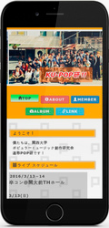

所属している大学の部活のサイト。主に新入生を対象に、外部に部の情報を発信している。
制作期間
３ヶ月
制作人数
１人
担当フロー
- 企画、サイトデザイン
- コンテンツ開発、モックアップ作成
- コーディング
- サーバーの準備、アップロード
使用ソフト・ツール
- Dreamweaver
- Photoshop
- Illustrator
使用言語・プラグイン
- HTML5
- CSS3
- JavaScript
- jQuery
- Bootstrap
- FC2アルバムメーカー
制作の動機
新入生歓迎の時期に合わせ、スマホに対応したサイトを１から構築するために作成。
旧サイト
工夫した点など
１ページ完結のサイト構成
ページを変移させずにコンテンツを１ページに収めている。 またメインコンテンツ部分はナビのボタンで切り替えることで、 見たいセクション以外を非表示にしている。
画像データの利用
煩雑なテキストデータが中心だった旧サイトのコンテンツを画像データやツイッタープラグインを導入することで見やすくしている。
 ページアイコンは楽器メーカー「Fender」を意識したデザイン。
ページアイコンは楽器メーカー「Fender」を意識したデザイン。
 地図はgifアニメーションで作り、簡素ながらも見やすさと分かりやすさを追求。
地図はgifアニメーションで作り、簡素ながらも見やすさと分かりやすさを追求。